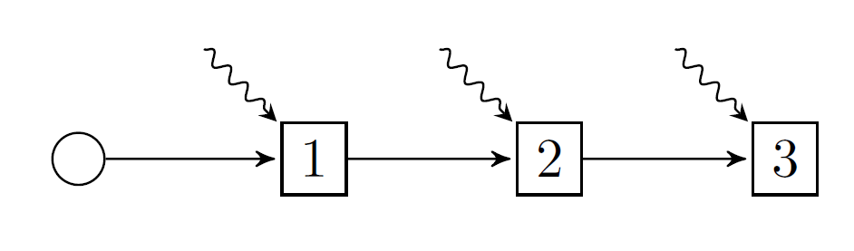

Theory I: an intro to SDDP
This tutorial is aimed at advanced undergraduates or early-stage graduate students. You don't need prior exposure to stochastic programming! (Indeed, it may be better if you don't, because our approach is non-standard in the literature.)
This tutorial is also a living document. If parts are unclear, please open an issue so it can be improved!
This tutorial will teach you how the stochastic dual dynamic programming algorithm works by implementing a simplified version of the algorithm.
Our implementation is very much a "vanilla" version of SDDP; it doesn't have (m)any fancy computational tricks (e.g., the ones included in SDDP.jl) that you need to code a performant or stable version that will work on realistic instances. However, our simplified implementation will work on arbitrary policy graphs, including those with cycles such as infinite horizon problems!
Packages
This tutorial uses the following packages. For clarity, we call import PackageName so that we must prefix PackageName. to all functions and structs provided by that package. Everything not prefixed is either part of base Julia, or we wrote it.
import ForwardDiff
import GLPK
import JuMP
import StatisticsYou can follow along by installing the above packages, and copy-pasting the code we will write into a Julia REPL. Alternatively, you can download the Julia .jl file which created this tutorial from Github.
Preliminaries: background theory
This section is copied verbatim from Basic I: first steps. If it's familiar, skip to Preliminaries: Kelley's cutting plane algorithm.
Multistage stochastic programming is complicated, and the literature has not settled upon standard naming conventions, so we must begin with some unavoidable theory and notation.
Policy graphs
A multistage stochastic program can be modeled by a policy graph. A policy graph is a graph with nodes and arcs. The simplest type of policy graph is a linear graph. Here's a linear graph with three nodes:

In addition to nodes 1, 2, and 3, there is also a root node (the circle), and three arcs. Each arc has an origin node and a destination node, like 1 => 2, and a corresponding probability of transitioning from the origin to the destination. Unless specified, we assume that the arc probabilities are uniform over the number of outgoing arcs. Thus, in this picture the arc probabilities are all 1.0. The squiggly lines denote random variables that we will discuss shortly.
We denote the set of nodes by $\mathcal{N}$, the root node by $R$, and the probability of transitioning from node $i$ to node $j$ by $p_{ij}$. (If no arc exists, then $p_{ij} = 0$.) We define the set of successors of node $i$ as $i^+ = \{j \in \mathcal{N} | p_{ij} > 0\}$.
Each square node in the graph corresponds to a place at which the agent makes a decision, and we call moments in time at which the agent makes a decision stages. By convention, we try to draw policy graphs from left-to-right, with the stages as columns. There can be more than one node in a stage! Here's an example, taken from the paper Dowson (2020):

The columns represent time, and the rows represent different states of the world. In this case, the rows represent different prices that milk can be sold for at the end of each year. The squiggly lines denote a multivariate random variable that models the weekly amount of rainfall that occurs. You can think of the nodes as forming a Markov chain, therefore, we call problems with a structure like this Markovian policy graphs. Moreover, note that policy graphs can have cycles! This allows them to model infinite horizon problems.
The sum of probabilities on the outgoing arcs of node $i$ can be less than 1, i.e., $\sum\limits_{j\in i^+} p_{ij} \le 1$. What does this mean? One interpretation is that the probability is a discount factor. Another interpretation is that there is an implicit "zero" node that we have not modeled, with $p_{i0} = 1 - \sum\limits_{j\in i^+} p_{ij}$. This zero node has $C_0(x, u, \omega) = 0$, and $0^+ = \varnothing$.
Problem notation
A common feature of multistage stochastic optimization problems is that they model an agent controlling a system over time. This system can be described by three types of variables.
State variables track a property of the system over time.
Each node has an associated incoming state variable (the value of the state at the start of the node), and an outgoing state variable (the value of the state at the end of the node).
Examples of state variables include the volume of water in a reservoir, the number of units of inventory in a warehouse, or the spatial position of a moving vehicle.
Because state variables track the system over time, each node must have the same set of state variables.
We denote state variables by the letter $x$ for the incoming state variable and $x^\prime$ for the outgoing state variable.
Control variables are actions taken (implicitly or explicitly) by the agent within a node which modify the state variables.
Examples of control variables include releases of water from the reservoir, sales or purchasing decisions, and acceleration or braking of the vehicle.
Control variables are local to a node $i$, and they can differ between nodes. For example, some control variables may be available within certain nodes.
We denote control variables by the letter $u$.
Random variables are finite, discrete, exogenous random variables that the agent observes at the start of a node, before the control variables are decided.
Examples of random variables include rainfall inflow into a reservoir, probalistic perishing of inventory, and steering errors in a vehicle.
Random variables are local to a node $i$, and they can differ between nodes. For example, some nodes may have random variables, and some nodes may not.
We denote random variables by the Greek letter $\omega$ and the sample space from which they are drawn by $\Omega_i$. The probability of sampling $\omega$ is denoted $p_{\omega}$ for simplicity.
Importantly, the random variable associated with node $i$ is independent of the random variables in all other nodes.
In a node $i$, the three variables are related by a transition function, which maps the incoming state, the controls, and the random variables to the outgoing state as follows: $x^\prime = T_i(x, u, \omega)$.
As a result of entering a node $i$ with the incoming state $x$, observing random variable $\omega$, and choosing control $u$, the agent incurs a cost $C_i(x, u, \omega)$. (If the agent is a maximizer, this can be a profit, or a negative cost.) We call $C_i$ the stage objective.
To choose their control variables in node $i$, the agent uses a decision rule $u = \pi_i(x, \omega)$, which is a function that maps the incoming state variable and observation of the random variable to a control $u$. This control must satisfy some feasibilty requirements $u \in U_i(x, \omega)$.
The set of decision rules, with one element for each node in the policy graph, is called a policy.
The goal of the agent is to find a policy that minimizes the expected cost of starting at the root node with some initial condition $x_R$, and proceeding from node to node along the probabilistic arcs until they reach a node with no outgoing arcs (or it reaches an implicit "zero" node).
\[\min_{\pi} \mathbb{E}_{i \in R^+, \omega \in \Omega_i}[V_i^\pi(x_R, \omega)],\]
where
\[V_i^\pi(x, \omega) = C_i(x, u, \omega) + \mathbb{E}_{j \in i^+, \varphi \in \Omega_j}[V_j(x^\prime, \varphi)],\]
where $u = \pi_i(x, \omega) \in U_i(x, \omega)$, and $x^\prime = T_i(x, u, \omega)$.
The expectations are a bit complicated, but they are equivalent to:
\[\mathbb{E}_{j \in i^+, \varphi \in \Omega_j}[V_j(x^\prime, \varphi)] = \sum\limits_{j \in i^+} p_{ij} \sum\limits_{\varphi \in \Omega_j} p_{\varphi}V_j(x^\prime, \varphi).\]
An optimal policy is the set of decision rules that the agent can use to make decisions and achieve the smallest expected cost.
Assumptions
This section is important!
The space of problems you can model with this framework is very large. Too large, in fact, for us to form tractable solution algorithms for! Stochastic dual dynamic programming requires the following assumptions in order to work:
Assumption 1: finite nodes
There is a finite number of nodes in $\mathcal{N}$.
Assumption 2: finite random variables
The sample space $\Omega_i$ is finite and discrete for each node $i\in\mathcal{N}$.
Assumption 3: convex problems
Given fixed $\omega$, $C_i(x, u, \omega)$ is a convex function, $T_i(x, u, \omega)$ is linear, and $U_i(x, u, \omega)$ is a non-empty, bounded convex set with respect to $x$ and $u$.
Assumption 4: no infinite loops
For all loops in the policy graph, the product of the arc transition probabilities around the loop is strictly less than 1.
SDDP.jl relaxes assumption (3) to allow for integer state and control variables, but we won't go into the details here. Assumption (4) essentially means that we obtain a discounted-cost solution for infinite-horizon problems, instead of an average-cost solution; see Dowson (2020) for details.
Dynamic programming and subproblems
Now that we have formulated our problem, we need some ways of computing optimal decision rules. One way is to just use a heuristic like "choose a control randomally from the set of feasible controls." However, such a policy is unlikely to be optimal.
A better way of obtaining an optimal policy is to use Bellman's principle of optimality, a.k.a Dynamic Programming, and define a recursive subproblem as follows:
\[\begin{aligned} V_i(x, \omega) = \min\limits_{\bar{x}, x^\prime, u} \;\; & C_i(\bar{x}, u, \omega) + \mathbb{E}_{j \in i^+, \varphi \in \Omega_j}[V_j(x^\prime, \varphi)]\\ & x^\prime = T_i(\bar{x}, u, \omega) \\ & u \in U_i(\bar{x}, \omega) \\ & \bar{x} = x. \end{aligned}\]
Our decision rule, $\pi_i(x, \omega)$, solves this optimization problem and returns a $u^*$ corresponding to an optimal solution.
We add $\bar{x}$ as a decision variable, along with the fishing constraint $\bar{x} = x$ for two reasons: it makes it obvious that formulating a problem with $x \times u$ results in a bilinear program instead of a linear program (see Assumption 3), and it simplifies the implementation of the SDDP algorithm.
These subproblems are very difficult to solve exactly, because they involve recursive optimization problems with lots of nested expectations.
Therefore, instead of solving them exactly, SDDP works by iteratively approximating the expectation term of each subproblem, which is also called the cost-to-go term. For now, you don't need to understand the details, we will explain how in Preliminaries: approximating the cost-to-go term.
The subproblem view of a multistage stochastic program is also important, because it provides a convienient way of communicating the different parts of the broader problem, and it is how we will communicate the problem to SDDP.jl. All we need to do is drop the cost-to-go term and fishing constraint, and define a new subproblem SP as:
\[\begin{aligned} \texttt{SP}_i(x, \omega) : \min\limits_{\bar{x}, x^\prime, u} \;\; & C_i(\bar{x}, u, \omega) \\ & x^\prime = T_i(\bar{x}, u, \omega) \\ & u \in U_i(\bar{x}, \omega). \end{aligned}\]
When we talk about formulating a subproblem with SDDP.jl, this is the formulation we mean.
We've retained the transition function and uncertainty set because they help to motivate the different components of the subproblem. However, in general, the subproblem can be more general. A better (less restrictive) representation might be:
\[\begin{aligned} \texttt{SP}_i(x, \omega) : \min\limits_{\bar{x}, x^\prime, u} \;\; & C_i(\bar{x}, x^\prime, u, \omega) \\ & (\bar{x}, x^\prime, u) \in \mathcal{X}_i(\omega). \end{aligned}\]
Note that the outgoing state variable can appear in the objective, and we can add constraints involving the incoming and outgoing state variables. It should be obvious how to map between the two representations.
Preliminaries: Kelley's cutting plane algorithm
Kelley's cutting plane algorithm is an iterative method for minimizing convex functions. Given a convex function $f(x)$, Kelley's constructs an under-approximation of the function at the minimum by a set of first-order Taylor series approximations (called cuts) constructed at a set of points $k = 1,\ldots,K$:
\[\begin{aligned} f^K = \min\limits_{\theta \in \mathbb{R}, x \in \mathbb{R}^N} \;\; & \theta\\ & \theta \ge f(x_k) + \frac{d}{dx}f(x_k)^\top (x - x_k),\quad k=1,\ldots,K\\ & \theta \ge M, \end{aligned}\]
where $M$ is a sufficiently large negative number that is a lower bound for $f$ over the domain of $x$.
Kelley's cutting plane algorithm is a structured way of choosing points $x_k$ to visit, so that as more cuts are added:
\[\lim_{K \rightarrow \infty} f^K = \min\limits_{x \in \mathbb{R}^N} f(x)\]
However, before we introduce the algorithm, we need to introduce some bounds.
Bounds
By convexity, $f^K \le f(x)$ for all $x$. Thus, if $x^*$ is a minimizer of $f$, then at any point in time we can construct a lower bound for $f(x^*)$ by solving $f^K$.
Moreover, we can use the primal solutions $x_k^*$ returned by solving $f^k$ to evaluate $f(x_k^*)$ to generate an upper bound.
Therefore, $f^K \le f(x^*) \le \min\limits_{k=1,\ldots,K} f(x_k^*)$.
When the lower bound is sufficiently close to the upper bound, we can terminate the algorithm and declare that we have found an solution that is close to optimal.
Implementation
Here is pseudo-code fo the Kelley algorithm:
- Take as input a convex function $f(x)$ and a iteration limit $K_{max}$. Set $K = 0$, and initialize $f^K$. Set $lb = -\infty$ and $ub = \infty$.
- Solve $f^K$ to obtain a candidate solution $x_{K+1}$.
- Update $lb = f^K$ and $ub = \min\{ub, f(x_{K+1})\}$.
- Add a cut $\theta \ge f(x_{K+1}) + \frac{d}{dx}f\left(x_{K+1}\right)^\top (x - x_{K+1})$ to form $f^{K+1}$.
- Increment $K$.
- If $K = K_{max}$ or $|ub - lb| < \epsilon$, STOP, otherwise, go to step 2.
And here's a complete implementation:
function kelleys_cutting_plane(
# The function to be minimized.
f::Function,
# The gradient of `f`. By default, we use automatic differentiation to
# compute the gradient of f so the user doesn't have to!
dfdx::Function = x -> ForwardDiff.gradient(f, x);
# The number of arguments to `f`.
input_dimension::Int,
# A lower bound for the function `f` over its domain.
lower_bound::Float64,
# The number of iterations to run Kelley's algorithm for before stopping.
iteration_limit::Int,
# The absolute tolerance ϵ to use for convergence.
tolerance::Float64 = 1e-6,
)
# Step (1):
K = 0
model = JuMP.Model(GLPK.Optimizer)
JuMP.@variable(model, θ >= lower_bound)
JuMP.@variable(model, x[1:input_dimension])
JuMP.@objective(model, Min, θ)
lower_bound, upper_bound = -Inf, Inf
while true
# Step (2):
JuMP.optimize!(model)
x_k = JuMP.value.(x)
# Step (3):
lower_bound = JuMP.objective_value(model)
upper_bound = min(upper_bound, f(x_k))
println("K = $K : $(lower_bound) <= f(x*) <= $(upper_bound)")
# Step (4):
JuMP.@constraint(model, θ >= f(x_k) + dfdx(x_k)' * (x .- x_k))
# Step (5):
K = K + 1
# Step (6):
if K == iteration_limit
println("-- Termination status: iteration limit --")
break
elseif abs(upper_bound - lower_bound) < tolerance
println("-- Termination status: converged --")
break
end
end
println("Found solution: x_K = ", JuMP.value.(x))
return
endkelleys_cutting_plane (generic function with 2 methods)Let's run our algorithm to see what happens:
kelleys_cutting_plane(
input_dimension = 2,
lower_bound = 0.0,
iteration_limit = 20,
) do x
return (x[1] - 1)^2 + (x[2] + 2)^2 + 1.0
endK = 0 : 0.0 <= f(x*) <= 6.0
K = 1 : 0.0 <= f(x*) <= 2.25
K = 2 : 0.0 <= f(x*) <= 2.25
K = 3 : 0.0 <= f(x*) <= 1.0986328125
K = 4 : 0.0 <= f(x*) <= 1.0986328125
K = 5 : 0.0 <= f(x*) <= 1.0986328125
K = 6 : 0.31451789700255095 <= f(x*) <= 1.0986328125
K = 7 : 0.5251698041461692 <= f(x*) <= 1.0986328125
K = 8 : 0.7300616982038292 <= f(x*) <= 1.0986328125
K = 9 : 0.8034849495130736 <= f(x*) <= 1.0283101871093756
K = 10 : 0.928700455583042 <= f(x*) <= 1.0283101871093756
K = 11 : 0.9487595478289129 <= f(x*) <= 1.005714217279734
K = 12 : 0.9823564684073586 <= f(x*) <= 1.005714217279734
K = 13 : 0.9878994829249163 <= f(x*) <= 1.0023277313143473
K = 14 : 0.9948297447399878 <= f(x*) <= 1.0023277313143473
K = 15 : 0.9966035252317598 <= f(x*) <= 1.0002586136309095
K = 16 : 0.9988344662887894 <= f(x*) <= 1.0002586136309095
K = 17 : 0.999400719780466 <= f(x*) <= 1.0002586136309095
K = 18 : 0.9995654191110327 <= f(x*) <= 1.0000883284156266
K = 19 : 0.9998024915692464 <= f(x*) <= 1.0000370583103833
-- Termination status: iteration limit --
Found solution: x_K = [0.99392, -1.9997]
It's hard to choose a valid lower bound! If you choose one too loose, the algorithm can take a long time to converge. However, if you choose one so tight that $M > f(x^*)$, then you can obtain a suboptimal solution. For a deeper discussion of the implications for SDDP.jl, see Choosing an initial bound.
Preliminaries: approximating the cost-to-go term
In the background theory section, we discussed how you could formulate an optimal policy to a multistage stochastic program using the dynamic programming recursion:
\[\begin{aligned} V_i(x, \omega) = \min\limits_{\bar{x}, x^\prime, u} \;\; & C_i(\bar{x}, u, \omega) + \mathbb{E}_{j \in i^+, \varphi \in \Omega_j}[V_j(x^\prime, \varphi)]\\ & x^\prime = T_i(\bar{x}, u, \omega) \\ & u \in U_i(\bar{x}, \omega) \\ & \bar{x} = x, \end{aligned}\]
where our decision rule, $\pi_i(x, \omega)$, solves this optimization problem and returns a $u^*$ corresponding to an optimal solution. Moreover, we alluded to the fact that the cost-to-go term (the nasty recursive expectation) makes this problem intractable to solve.
However, if, excluding the cost-to-go term (i.e., the SP formulation), $V_i(x, \omega)$ can be formulated as a linear program (this also works for convex programs, but the math is more involved), then we can make some progress by noticing that $x$ only appears as a right-hand side term of the fishing constraint $\bar{x} = x$.
Therefore, $V_i(x, \cdot)$ is convex with respect to $x$ for fixed $\omega$. Moreover, if we implement the constraint $\bar{x} = x$ by setting the lower- and upper bounds of $\bar{x}$ to $x$, then the reduced cost of the decision variable $\bar{x}$ is a subgradient of the function $V_i$ with respect to $x$! (This is the algorithmic simplification that leads us to add $\bar{x}$ and the fishing constraint $\bar{x} = x$.)
Stochastic dual dynamic programming converts this problem into a tractable form by applying Kelley's cutting plane algorithm to the $V_j$ functions in the cost-to-go term:
\[\begin{aligned} V_i^K(x, \omega) = \min\limits_{\bar{x}, x^\prime, u} \;\; & C_i(\bar{x}, u, \omega) + \theta\\ & x^\prime = T_i(\bar{x}, u, \omega) \\ & u \in U_i(\bar{x}, \omega) \\ & \bar{x} = x \\ & \theta \ge \mathbb{E}_{j \in i^+, \varphi \in \Omega_j}\left[V_j^k(x^\prime_k, \varphi) + \frac{d}{dx^\prime}V_j^k(x^\prime_k, \varphi)^\top (x^\prime - x^\prime_k)\right],\quad k=1,\ldots,K \\ & \theta \ge M. \end{aligned}\]
All we need now is a way of generating these cutting planes in an iterative manner. Before we get to that though, let's start writing some code.
Implementation: modeling
Let's make a start by defining the problem structure. Like SDDP.jl, we need a few things:
- A description of the structure of the policy graph: how many nodes there are, and the arcs linking the nodes together with their corresponding probabilities.
- A JuMP model for each node in the policy graph.
- A way to identify the incoming and outgoing state variables of each node.
- A description of the random variable, as well as a function that we can call that will modify the JuMP model to reflect the realization of the random variable.
- A decision variable to act as the approximated cost-to-go term.
In the interests of brevity, there is minimal error checking. Think about all the different ways you could break the code!
Structs
The first struct we are going to use is a State struct that will wrap an incoming and outgoing state variable:
struct State
in::JuMP.VariableRef
out::JuMP.VariableRef
endNext, we need a struct to wrap all of the uncertainty within a node:
struct Uncertainty
parameterize::Function
Ω::Vector{Any}
P::Vector{Float64}
endparameterize is a function which takes a realization of the random variable $\omega\in\Omega$ and updates the subproblem accordingly. The finite discrete random variable is defined by the vectors Ω and P, so that the random variable takes the value Ω[i] with probability P[i]. As such, P should sum to 1. (We don't check this here, but we should; we do in SDDP.jl.)
Now we have two building blocks, we can declare the structure of each node:
struct Node
subproblem::JuMP.Model
states::Dict{Symbol,State}
uncertainty::Uncertainty
cost_to_go::JuMP.VariableRef
endsubproblemis going to be the JuMP model that we build at each node.statesis a dictionary that maps a symbolic name of a state variable to aStateobject wrapping the incoming and outgoing state variables insubproblem.uncertaintyis anUncertaintyobject described above.cost_to_gois a JuMP variable that approximates the cost-to-go term.
Finally, we define a simplified policy graph as follows:
struct PolicyGraph
nodes::Vector{Node}
arcs::Vector{Dict{Int,Float64}}
endThere is a vector of nodes, as well as a data structure for the arcs. arcs is a vector of dictionaries, where arcs[i][j] gives the probabiltiy of transitioning from node i to node j, if an arc exists.
To simplify things, we will assume that the root node transitions to node 1 with probability 1, and there are no other incoming arcs to node 1. Notably, we can still define cyclic graphs though!
We also define a nice show method so that we don't accidentally print a large amount of information to the screen when creating a model:
function Base.show(io::IO, model::PolicyGraph)
println(io, "A policy graph with $(length(model.nodes)) nodes")
println(io, "Arcs:")
for (from, arcs) in enumerate(model.arcs)
for (to, probability) in arcs
println(io, " $(from) => $(to) w.p. $(probability)")
end
end
return
endFunctions
Now we have some basic types, let's implement some functions so that the user can create a model.
First, we need an example of a function that the user will provide. Like SDDP.jl, this takes an empty subproblem, and a node index, in this case t::Int. You could change this function to change the model, or define a new one later in the code.
We're going to copy the example from Basic II: adding uncertainty, with some minor adjustments for the fact we don't have many of the bells and whistles of SDDP.jl. You can probably see how some of the SDDP.jl functionality like @stageobjective and SDDP.parameterize help smooth some of the usability issues like needing to construct both the incoming and outgoing state variables, or needing to explicitly declare return states, uncertainty.
function subproblem_builder(subproblem::JuMP.Model, t::Int)
# Define the state variables. Note how we fix the incoming state to the
# initial state variable regardless of `t`! This isn't strictly necessary;
# it only matters that we do it for the first node.
JuMP.@variable(subproblem, volume_in == 200)
JuMP.@variable(subproblem, 0 <= volume_out <= 200)
states = Dict(:volume => State(volume_in, volume_out))
# Define the control variables.
JuMP.@variables(subproblem, begin
thermal_generation >= 0
hydro_generation >= 0
hydro_spill >= 0
inflow
end)
# Define the constraints
JuMP.@constraints(subproblem, begin
volume_out == volume_in + inflow - hydro_generation - hydro_spill
demand_constraint, thermal_generation + hydro_generation == 150.0
end)
# Define the objective for each stage `t`. Note that we can use `t` as an
# index for t = 1, 2, 3.
fuel_cost = [50.0, 100.0, 150.0]
JuMP.@objective(subproblem, Min, fuel_cost[t] * thermal_generation)
# Finally, we define the uncertainty object. Because this is a simplified
# implementation of SDDP, we shall politely ask the user to only modify the
# constraints, and not the objective function! (Not that it changes the
# algorithm, we just have to add more information to keep track of things.)
uncertainty = Uncertainty([0.0, 50.0, 100.0], [1 / 3, 1 / 3, 1 / 3]) do ω
JuMP.fix(inflow, ω)
end
return states, uncertainty
endsubproblem_builder (generic function with 1 method)The next function we need to define is the analog of SDDP.PolicyGraph. It should be pretty readable.
function PolicyGraph(
subproblem_builder::Function;
graph::Vector{Dict{Int,Float64}},
lower_bound::Float64,
optimizer,
)
nodes = Node[]
for t = 1:length(graph)
# Create a model.
model = JuMP.Model(optimizer)
# Use the provided function to build out each subproblem. The user's
# function returns a dictionary mapping `Symbol`s to `State` objects,
# and an `Uncertainty` object.
states, uncertainty = subproblem_builder(model, t)
# Now add the cost-to-go terms:
JuMP.@variable(model, cost_to_go >= lower_bound)
obj = JuMP.objective_function(model)
JuMP.@objective(model, Min, obj + cost_to_go)
# If there are no outgoing arcs, the cost-to-go is 0.0.
if length(graph[t]) == 0
JuMP.fix(cost_to_go, 0.0; force = true)
end
push!(nodes, Node(model, states, uncertainty, cost_to_go))
end
return PolicyGraph(nodes, graph)
endMain.##1527.PolicyGraphThen, we can create a model using the subproblem_builder function we defined earlier:
model = PolicyGraph(
subproblem_builder;
graph = [
Dict(2 => 1.0),
Dict(3 => 1.0),
Dict{Int,Float64}(),
],
lower_bound = 0.0,
optimizer = GLPK.Optimizer,
)A policy graph with 3 nodes
Arcs:
1 => 2 w.p. 1.0
2 => 3 w.p. 1.0
Implementation: helpful samplers
Before we get properly coding the solution algorithm, it's also going to be useful to have a function that samples a realization of the random variable defined by Ω and P.
function sample_uncertainty(uncertainty::Uncertainty)
r = rand()
for (p, ω) in zip(uncertainty.P, uncertainty.Ω)
r -= p
if r < 0.0
return ω
end
end
error("We should never get here because P should sum to 1.0.")
endsample_uncertainty (generic function with 1 method)rand() samples a uniform random variable in [0, 1).
For example:
for i = 1:3
println("ω = ", sample_uncertainty(model.nodes[1].uncertainty))
endω = 50.0
ω = 100.0
ω = 50.0
It's also going to be useful to define a function that generates a random walk through the nodes of the graph:
function sample_next_node(model::PolicyGraph, current::Int)
if length(model.arcs[current]) == 0
# No outgoing arcs!
return nothing
else
r = rand()
for (to, probability) in model.arcs[current]
r -= probability
if r < 0.0
return to
end
end
# We looped through the outgoing arcs and still have probability left
# over! This means we've hit an implicit "zero" node.
return nothing
end
endsample_next_node (generic function with 1 method)For example:
for i = 1:3
# We use `repr` to print the next node, because `sample_next_node` can
# return `nothing`.
println("Next node from $(i) = ", repr(sample_next_node(model, i)))
endNext node from 1 = 2
Next node from 2 = 3
Next node from 3 = nothing
This is a little boring, because our graph is simple. However, more complicated graphs will generate more interesting trajectories!
Implementation: the forward pass
Recall that, after approximating the cost-to-go term, we need a way of generating the cuts. As the first step, we need a way of generating candidate solutions $x_k^\prime$. However, unlike the Kelley's example, our functions $V_j^k(x^\prime, \varphi)$ need two inputs: an outgoing state variable and a realization of the random variable.
One way of getting these inputs is just to pick a random (feasible) value. However, in doing so, we might pick outgoing state variables that we will never see in practice, or we might infrequently pick outgoing state variables that we will often see in practice. Therefore, a better way of generating the inputs is to use a simulation of the policy, which we call the forward pass.
The forward pass walks the policy graph from start to end, transitioning randomly along the arcs. At each node, it observes a realization of the random variable and solves the approximated subproblem to generate a candidate outgoing state variable $x_k^\prime$. The outgoing state variable is passed as the incoming state variable to the next node in the trajectory.
function forward_pass(model::PolicyGraph, io::IO = stdout)
println(io, "| Forward Pass")
# First, get the value of the state at the root node (e.g., x_R).
incoming_state = Dict(
k => JuMP.fix_value(v.in) for (k, v) in model.nodes[1].states
)
# `simulation_cost` is an accumlator that is going to sum the stage-costs
# incurred over the forward pass.
simulation_cost = 0.0
# We also need to record the nodes visited and resultant outgoing state
# variables so we can pass them to the backward pass.
trajectory = Tuple{Int,Dict{Symbol,Float64}}[]
# Now's the meat of the forward pass: beginning at the first node:
t = 1
while t !== nothing
node = model.nodes[t]
println(io, "| | Visiting node $(t)")
# Sample the uncertainty:
ω = sample_uncertainty(node.uncertainty)
println(io, "| | | ω = ", ω)
# Parameterizing the subproblem using the user-provided function:
node.uncertainty.parameterize(ω)
println(io, "| | | x = ", incoming_state)
# Update the incoming state variable:
for (k, v) in incoming_state
JuMP.fix(node.states[k].in, v; force = true)
end
# Now solve the subproblem and check we found an optimal solution:
JuMP.optimize!(node.subproblem)
if JuMP.termination_status(node.subproblem) != JuMP.MOI.OPTIMAL
error("Something went terribly wrong!")
end
# Compute the outgoing state variables:
outgoing_state = Dict(k => JuMP.value(v.out) for (k, v) in node.states)
println(io, "| | | x′ = ", outgoing_state)
# We also need to compute the stage cost to add to our
# `simulation_cost` accumulator:
stage_cost = JuMP.objective_value(node.subproblem) - JuMP.value(node.cost_to_go)
simulation_cost += stage_cost
println(io, "| | | C(x, u, ω) = ", stage_cost)
# As a penultimate step, set the outgoing state of stage t and the
# incoming state of stage t + 1, and add the node to the trajectory.
incoming_state = outgoing_state
push!(trajectory, (t, outgoing_state))
# Finally, sample a new node to step to. If `t === nothing`, the
# `while` loop will break.
t = sample_next_node(model, t)
end
return trajectory, simulation_cost
endforward_pass (generic function with 2 methods)Let's take a look at one forward pass:
trajectory, simulation_cost = forward_pass(model);
| Forward Pass
| | Visiting node 1
| | | ω = 50.0
| | | x = Dict(:volume=>200.0)
| | | x′ = Dict(:volume=>100.0)
| | | C(x, u, ω) = 0.0
| | Visiting node 2
| | | ω = 0.0
| | | x = Dict(:volume=>100.0)
| | | x′ = Dict(:volume=>0.0)
| | | C(x, u, ω) = 5000.0
| | Visiting node 3
| | | ω = 0.0
| | | x = Dict(:volume=>0.0)
| | | x′ = Dict(:volume=>0.0)
| | | C(x, u, ω) = 22500.0
Implementation: the backward pass
From the forward pass, we obtained a vector of nodes visted and their corresponding outgoing state variables. Now we need to refine the approximation for each node at the candidate solution for the outgoing state variable. That is, we need to add a new cut:
\[\theta \ge \mathbb{E}_{j \in i^+, \varphi \in \Omega_j}\left[V_j^k(x^\prime_k, \varphi) + \frac{d}{dx^\prime}V_j^k(x^\prime_k, \varphi)^\top (x^\prime - x^\prime_k)\right]\]
or alternatively:
\[\theta \ge \sum\limits_{j \in i^+} \sum\limits_{\varphi \in \Omega_j} p_{ij} p_{\varphi}\left[V_j^k(x^\prime_k, \varphi) + \frac{d}{dx^\prime}V_j^k(x^\prime_k, \varphi)^\top (x^\prime - x^\prime_k)\right]\]
It doesn't matter what order we visit the nodes to generate these cuts for. For example, we could compute them all in parallel, using the current approximations of $V^K_i$.
However, we can be smarter than that.
If we traverse the list of nodes visited in the forward pass in reverse, then we come to refine the $i$th node in the trajectory, we will already have improved the approximation of the $(i+1)$th node in the trajectory as well! Therefore, our refinement of the $i$th node will be better than if we improved node $i$ first, and then refined node $(i+1)$.
Because we walk the nodes in reverse, we call this the backward pass.
If you're into deep learning, you could view this as the equivalent of back-propagation: the forward pass pushes primal information through the graph (outgoing state variables), and the backward pass pulls dual information (cuts) back through the graph to improve our decisions on the next forward pass.
function backward_pass(
model::PolicyGraph,
trajectory::Vector{Tuple{Int,Dict{Symbol,Float64}}},
io::IO = stdout,
)
println(io, "| Backward pass")
# For the backward pass, we walk back up the nodes.
for i = reverse(1:length(trajectory))
index, outgoing_states = trajectory[i]
node = model.nodes[index]
println(io, "| | Visiting node $(index)")
if length(model.arcs[index]) == 0
# If there are no children, the cost-to-go is 0.
println(io, "| | | Skipping node because the cost-to-go is 0")
continue
end
# Create an empty affine expression that we will use to build up the
# right-hand side of the cut expression.
cut_expression = JuMP.AffExpr(0.0)
# For each node j ∈ i⁺
for (j, P_ij) in model.arcs[index]
next_node = model.nodes[j]
# Set the incoming state variables of node j to the outgoing state
# variables of node i
for (k, v) in outgoing_states
JuMP.fix(next_node.states[k].in, v; force = true)
end
# Then for each realization of φ ∈ Ωⱼ
for (pφ, φ) in zip(next_node.uncertainty.P, next_node.uncertainty.Ω)
# Setup and solve for the realization of φ
println(io, "| | | Solving φ = ", φ)
next_node.uncertainty.parameterize(φ)
JuMP.optimize!(next_node.subproblem)
# Then prepare the cut `P_ij * pφ * [V + dVdxᵀ(x - x_k)]``
V = JuMP.objective_value(next_node.subproblem)
println(io, "| | | | V = ", V)
dVdx = Dict(
k => JuMP.reduced_cost(v.in) for (k, v) in next_node.states
)
println(io, "| | | | dVdx′ = ", dVdx)
cut_expression += JuMP.@expression(
node.subproblem,
P_ij * pφ * (
V + sum(
dVdx[k] * (x.out - outgoing_states[k])
for (k, x) in node.states
)
),
)
end
end
# And then refine the cost-to-go variable by adding the cut:
c = JuMP.@constraint(node.subproblem, node.cost_to_go >= cut_expression)
println(io, "| | | Adding cut : ", c)
end
return nothing
endbackward_pass (generic function with 2 methods)Implementation: bounds
Lower bounds
Recall from Kelley's that we can obtain a lower bound for $f(x^*)$ be evaluating $f^K$. The analogous lower bound for a multistage stochastic program is:
\[\mathbb{E}_{i \in R^+, \omega \in \Omega_i}[V_i^K(x_R, \omega)] \le \min_{\pi} \mathbb{E}_{i \in R^+, \omega \in \Omega_i}[V_i^\pi(x_R, \omega)]\]
Here's how we compute the lower bound:
function lower_bound(model::PolicyGraph)
node = model.nodes[1]
bound = 0.0
for (p, ω) in zip(node.uncertainty.P, node.uncertainty.Ω)
node.uncertainty.parameterize(ω)
JuMP.optimize!(node.subproblem)
bound += p * JuMP.objective_value(node.subproblem)
end
return bound
endlower_bound (generic function with 1 method)The implementation is simplified because we assumed that there is only one arc from the root node, and that it pointed to the first node in the vector.
Because we haven't trained a policy yet, the lower bound is going to be very bad:
lower_bound(model)0.0Upper bounds
With Kelley's algorithm, we could easily construct an upper bound by evaluating $f(x_K)$. However, it is almost always intractable to evaluate an upper bound for multistage stochastic programs due to the large number of nodes and the nested expectations. Instead, we can perform a Monte Carlo simulation of the policy to build a statistical estimate for the value of $\mathbb{E}_{i \in R^+, \omega \in \Omega_i}[V_i^\pi(x_R, \omega)]$, where $\pi$ is the policy defined by the current approximations $V^K_i$.
function upper_bound(model::PolicyGraph; replications::Int)
# Pipe the output to `devnull` so we don't print too much!
simulations = [forward_pass(model, devnull) for i = 1:replications]
z = [s[2] for s in simulations]
μ = Statistics.mean(z)
tσ = 1.96 * Statistics.std(z) / sqrt(replications)
return μ, tσ
endupper_bound (generic function with 1 method)The width of the confidence interval is incorrect if there are cycles in the graph, because the distribution of simulation costs z is not symmetric. The mean is correct, however.
Termination criteria
In Kelley's algorithm, the upper bound was deterministic. Therefore, we could terminate the algorithm when the lower bound was sufficiently close to the upper bound. However, our upper bound for SDDP is not deterministic; it is a confidence interval!
Some people suggest terminating SDDP when the lower bound is contained within the confidence interval. However, this is a poor choice because it is too easy to generate a false positive. For example, if we use a small number of replications then the width of the confidence will be large, and we are more likely to terminate!
In a future tutorial (not yet written...) we will discuss termination criteria in more depth. For now, pick a large number of iterations and train for as long as possible.
For a rule of thumb, pick a large number of iterations to train the policy for (e.g., $10 \times |\mathcal{N}| \times \max\limits_{i\in\mathcal{N}} |\Omega_i|$)
Implementation: the training loop
The train loop of SDDP just applies the forward and backward passes iteratively, followed by a final simulation to compute the upper bound confidence interval:
function train(
model::PolicyGraph;
iteration_limit::Int,
replications::Int,
io::IO = stdout,
)
for i = 1:iteration_limit
println(io, "Starting iteration $(i)")
outgoing_states, _ = forward_pass(model, io)
backward_pass(model, outgoing_states, io)
println(io, "| Finished iteration")
println(io, "| | lower_bound = ", lower_bound(model))
end
println(io, "Termination status: iteration limit")
μ, tσ = upper_bound(model; replications = replications)
println(io, "Upper bound = $(μ) ± $(tσ)")
return
endtrain (generic function with 1 method)Using our model we defined earlier, we can go:
train(model; iteration_limit = 3, replications = 100)Starting iteration 1
| Forward Pass
| | Visiting node 1
| | | ω = 50.0
| | | x = Dict(:volume=>200.0)
| | | x′ = Dict(:volume=>100.0)
| | | C(x, u, ω) = 0.0
| | Visiting node 2
| | | ω = 50.0
| | | x = Dict(:volume=>100.0)
| | | x′ = Dict(:volume=>0.0)
| | | C(x, u, ω) = 0.0
| | Visiting node 3
| | | ω = 50.0
| | | x = Dict(:volume=>0.0)
| | | x′ = Dict(:volume=>0.0)
| | | C(x, u, ω) = 15000.0
| Backward pass
| | Visiting node 3
| | | Skipping node because the cost-to-go is 0
| | Visiting node 2
| | | Solving φ = 0.0
| | | | V = 22500.0
| | | | dVdx′ = Dict(:volume=>-150.0)
| | | Solving φ = 50.0
| | | | V = 15000.0
| | | | dVdx′ = Dict(:volume=>-150.0)
| | | Solving φ = 100.0
| | | | V = 7500.0
| | | | dVdx′ = Dict(:volume=>-150.0)
| | | Adding cut : 150 volume_out + cost_to_go ≥ 15000.0
| | Visiting node 1
| | | Solving φ = 0.0
| | | | V = 15000.0
| | | | dVdx′ = Dict(:volume=>-100.0)
| | | Solving φ = 50.0
| | | | V = 10000.0
| | | | dVdx′ = Dict(:volume=>-100.0)
| | | Solving φ = 100.0
| | | | V = 5000.0
| | | | dVdx′ = Dict(:volume=>-100.0)
| | | Adding cut : 99.99999999999999 volume_out + cost_to_go ≥ 20000.0
| Finished iteration
| | lower_bound = 5000.000000000002
Starting iteration 2
| Forward Pass
| | Visiting node 1
| | | ω = 50.0
| | | x = Dict(:volume=>200.0)
| | | x′ = Dict(:volume=>200.0)
| | | C(x, u, ω) = 5000.000000000002
| | Visiting node 2
| | | ω = 50.0
| | | x = Dict(:volume=>200.0)
| | | x′ = Dict(:volume=>100.0)
| | | C(x, u, ω) = -2.8421709430404007e-12
| | Visiting node 3
| | | ω = 50.0
| | | x = Dict(:volume=>100.0)
| | | x′ = Dict(:volume=>0.0)
| | | C(x, u, ω) = 0.0
| Backward pass
| | Visiting node 3
| | | Skipping node because the cost-to-go is 0
| | Visiting node 2
| | | Solving φ = 0.0
| | | | V = 7500.0
| | | | dVdx′ = Dict(:volume=>-150.0)
| | | Solving φ = 50.0
| | | | V = 0.0
| | | | dVdx′ = Dict(:volume=>-150.0)
| | | Solving φ = 100.0
| | | | V = 0.0
| | | | dVdx′ = Dict(:volume=>0.0)
| | | Adding cut : 100 volume_out + cost_to_go ≥ 12500.0
| | Visiting node 1
| | | Solving φ = 0.0
| | | | V = 7499.999999999997
| | | | dVdx′ = Dict(:volume=>-100.0)
| | | Solving φ = 50.0
| | | | V = 2499.9999999999973
| | | | dVdx′ = Dict(:volume=>-100.0)
| | | Solving φ = 100.0
| | | | V = 0.0
| | | | dVdx′ = Dict(:volume=>0.0)
| | | Adding cut : 66.66666666666666 volume_out + cost_to_go ≥ 16666.666666666664
| Finished iteration
| | lower_bound = 8333.333333333332
Starting iteration 3
| Forward Pass
| | Visiting node 1
| | | ω = 100.0
| | | x = Dict(:volume=>200.0)
| | | x′ = Dict(:volume=>200.0)
| | | C(x, u, ω) = 2500.0
| | Visiting node 2
| | | ω = 100.0
| | | x = Dict(:volume=>200.0)
| | | x′ = Dict(:volume=>125.0)
| | | C(x, u, ω) = 0.0
| | Visiting node 3
| | | ω = 0.0
| | | x = Dict(:volume=>125.0)
| | | x′ = Dict(:volume=>0.0)
| | | C(x, u, ω) = 3750.0
| Backward pass
| | Visiting node 3
| | | Skipping node because the cost-to-go is 0
| | Visiting node 2
| | | Solving φ = 0.0
| | | | V = 3750.0
| | | | dVdx′ = Dict(:volume=>-150.0)
| | | Solving φ = 50.0
| | | | V = 0.0
| | | | dVdx′ = Dict(:volume=>0.0)
| | | Solving φ = 100.0
| | | | V = 0.0
| | | | dVdx′ = Dict(:volume=>0.0)
| | | Adding cut : 50 volume_out + cost_to_go ≥ 7500.0
| | Visiting node 1
| | | Solving φ = 0.0
| | | | V = 7500.0
| | | | dVdx′ = Dict(:volume=>-100.0)
| | | Solving φ = 50.0
| | | | V = 2500.0
| | | | dVdx′ = Dict(:volume=>-100.0)
| | | Solving φ = 100.0
| | | | V = 0.0
| | | | dVdx′ = Dict(:volume=>0.0)
| | | Adding cut : 66.66666666666666 volume_out + cost_to_go ≥ 16666.666666666664
| Finished iteration
| | lower_bound = 8333.333333333332
Termination status: iteration limit
Upper bound = 8475.0 ± 858.3515973343701
Success! We trained a policy for a finite horizon multistage stochastic program using stochastic dual dynamic programming.
Implementation: evaluating the policy
A final step is the ability to evaluate the policy at a given point.
function evaluate_policy(
model::PolicyGraph;
node::Int,
incoming_state::Dict{Symbol,Float64},
random_variable,
)
the_node = model.nodes[node]
the_node.uncertainty.parameterize(random_variable)
for (k, v) in incoming_state
JuMP.fix(the_node.states[k].in, v; force = true)
end
JuMP.optimize!(the_node.subproblem)
return Dict(
k => JuMP.value.(v)
for (k, v) in JuMP.object_dictionary(the_node.subproblem)
)
end
evaluate_policy(
model;
node = 1,
incoming_state = Dict(:volume => 150.0),
random_variable = 75,
)Dict{Symbol,Float64} with 8 entries:
:volume_out => 200.0
:demand_constraint => 150.0
:hydro_spill => 0.0
:inflow => 75.0
:volume_in => 150.0
:thermal_generation => 125.0
:hydro_generation => 25.0
:cost_to_go => 3333.33The random variable can be out-of-sample, i.e., it doesn't have to be in the vector $\Omega$ we created when defining the model! This is a notable difference to other multistage stochastic solution methods like progressive hedging or using the deterministic equivalent.
Example: infinite horizon
As promised earlier, our implementation is actually pretty general. It can solve any multistage stochastic (linear) program defined by a policy graph, including infinite horizon problems!
Here's an example, where we have extended our earlier problem with an arc from node 3 to node 2 with probability 0.5. You can interpret the 0.5 as a discount factor.
model = PolicyGraph(
subproblem_builder;
graph = [
Dict(2 => 1.0),
Dict(3 => 1.0),
Dict(2 => 0.5),
],
lower_bound = 0.0,
optimizer = GLPK.Optimizer,
)A policy graph with 3 nodes
Arcs:
1 => 2 w.p. 1.0
2 => 3 w.p. 1.0
3 => 2 w.p. 0.5
Then, train a policy:
train(model; iteration_limit = 3, replications = 100)Starting iteration 1
| Forward Pass
| | Visiting node 1
| | | ω = 0.0
| | | x = Dict(:volume=>200.0)
| | | x′ = Dict(:volume=>50.0)
| | | C(x, u, ω) = 0.0
| | Visiting node 2
| | | ω = 50.0
| | | x = Dict(:volume=>50.0)
| | | x′ = Dict(:volume=>0.0)
| | | C(x, u, ω) = 5000.0
| | Visiting node 3
| | | ω = 100.0
| | | x = Dict(:volume=>0.0)
| | | x′ = Dict(:volume=>0.0)
| | | C(x, u, ω) = 7500.0
| Backward pass
| | Visiting node 3
| | | Solving φ = 0.0
| | | | V = 15000.0
| | | | dVdx′ = Dict(:volume=>-100.0)
| | | Solving φ = 50.0
| | | | V = 10000.0
| | | | dVdx′ = Dict(:volume=>-100.0)
| | | Solving φ = 100.0
| | | | V = 5000.0
| | | | dVdx′ = Dict(:volume=>-100.0)
| | | Adding cut : 49.99999999999999 volume_out + cost_to_go ≥ 4999.999999999999
| | Visiting node 2
| | | Solving φ = 0.0
| | | | V = 27500.0
| | | | dVdx′ = Dict(:volume=>-150.0)
| | | Solving φ = 50.0
| | | | V = 20000.0
| | | | dVdx′ = Dict(:volume=>-150.0)
| | | Solving φ = 100.0
| | | | V = 12500.0
| | | | dVdx′ = Dict(:volume=>-150.0)
| | | Adding cut : 150 volume_out + cost_to_go ≥ 20000.0
| | Visiting node 1
| | | Solving φ = 0.0
| | | | V = 27500.0
| | | | dVdx′ = Dict(:volume=>-150.0)
| | | Solving φ = 50.0
| | | | V = 20000.0
| | | | dVdx′ = Dict(:volume=>-150.0)
| | | Solving φ = 100.0
| | | | V = 13333.333333333334
| | | | dVdx′ = Dict(:volume=>-100.0)
| | | Adding cut : 133.33333333333331 volume_out + cost_to_go ≥ 26944.444444444445
| Finished iteration
| | lower_bound = 5277.777777777781
Starting iteration 2
| Forward Pass
| | Visiting node 1
| | | ω = 100.0
| | | x = Dict(:volume=>200.0)
| | | x′ = Dict(:volume=>200.0)
| | | C(x, u, ω) = 2500.0
| | Visiting node 2
| | | ω = 100.0
| | | x = Dict(:volume=>200.0)
| | | x′ = Dict(:volume=>133.333)
| | | C(x, u, ω) = 0.0
| | Visiting node 3
| | | ω = 100.0
| | | x = Dict(:volume=>133.333)
| | | x′ = Dict(:volume=>83.3333)
| | | C(x, u, ω) = 0.0
| | Visiting node 2
| | | ω = 100.0
| | | x = Dict(:volume=>83.3333)
| | | x′ = Dict(:volume=>133.333)
| | | C(x, u, ω) = 10000.0
| | Visiting node 3
| | | ω = 50.0
| | | x = Dict(:volume=>133.333)
| | | x′ = Dict(:volume=>33.3333)
| | | C(x, u, ω) = 0.0
| Backward pass
| | Visiting node 3
| | | Solving φ = 0.0
| | | | V = 30000.0
| | | | dVdx′ = Dict(:volume=>-150.0)
| | | Solving φ = 50.0
| | | | V = 22500.0
| | | | dVdx′ = Dict(:volume=>-150.0)
| | | Solving φ = 100.0
| | | | V = 15000.0
| | | | dVdx′ = Dict(:volume=>-150.0)
| | | Adding cut : 75 volume_out + cost_to_go ≥ 13750.000000000002
| | Visiting node 2
| | | Solving φ = 0.0
| | | | V = 16249.999999999998
| | | | dVdx′ = Dict(:volume=>-150.0)
| | | Solving φ = 50.0
| | | | V = 11250.0
| | | | dVdx′ = Dict(:volume=>-75.0)
| | | Solving φ = 100.0
| | | | V = 7500.0
| | | | dVdx′ = Dict(:volume=>-75.0)
| | | Adding cut : 100 volume_out + cost_to_go ≥ 25000.0
| | Visiting node 3
| | | Solving φ = 0.0
| | | | V = 31666.666666666664
| | | | dVdx′ = Dict(:volume=>-100.0)
| | | Solving φ = 50.0
| | | | V = 26666.666666666664
| | | | dVdx′ = Dict(:volume=>-100.0)
| | | Solving φ = 100.0
| | | | V = 21666.666666666664
| | | | dVdx′ = Dict(:volume=>-100.0)
| | | Adding cut : 49.99999999999999 volume_out + cost_to_go ≥ 17499.999999999996
| | Visiting node 2
| | | Solving φ = 0.0
| | | | V = 19999.999999999996
| | | | dVdx′ = Dict(:volume=>-150.0)
| | | Solving φ = 50.0
| | | | V = 15833.333333333328
| | | | dVdx′ = Dict(:volume=>-50.0)
| | | Solving φ = 100.0
| | | | V = 13333.333333333328
| | | | dVdx′ = Dict(:volume=>-50.0)
| | | Adding cut : 83.33333333333331 volume_out + cost_to_go ≥ 27499.999999999993
| | Visiting node 1
| | | Solving φ = 0.0
| | | | V = 23333.33333333333
| | | | dVdx′ = Dict(:volume=>-83.3333)
| | | Solving φ = 50.0
| | | | V = 19166.66666666666
| | | | dVdx′ = Dict(:volume=>-83.3333)
| | | Solving φ = 100.0
| | | | V = 14999.999999999996
| | | | dVdx′ = Dict(:volume=>-83.3333)
| | | Adding cut : 83.33333333333331 volume_out + cost_to_go ≥ 35833.33333333333
| Finished iteration
| | lower_bound = 24166.666666666664
Starting iteration 3
| Forward Pass
| | Visiting node 1
| | | ω = 0.0
| | | x = Dict(:volume=>200.0)
| | | x′ = Dict(:volume=>200.0)
| | | C(x, u, ω) = 7500.0
| | Visiting node 2
| | | ω = 0.0
| | | x = Dict(:volume=>200.0)
| | | x′ = Dict(:volume=>50.0)
| | | C(x, u, ω) = 0.0
| | Visiting node 3
| | | ω = 100.0
| | | x = Dict(:volume=>50.0)
| | | x′ = Dict(:volume=>0.0)
| | | C(x, u, ω) = 0.0
| Backward pass
| | Visiting node 3
| | | Solving φ = 0.0
| | | | V = 42499.99999999999
| | | | dVdx′ = Dict(:volume=>-100.0)
| | | Solving φ = 50.0
| | | | V = 37499.99999999999
| | | | dVdx′ = Dict(:volume=>-100.0)
| | | Solving φ = 100.0
| | | | V = 32499.999999999993
| | | | dVdx′ = Dict(:volume=>-100.0)
| | | Adding cut : 49.99999999999999 volume_out + cost_to_go ≥ 18749.999999999996
| | Visiting node 2
| | | Solving φ = 0.0
| | | | V = 33750.0
| | | | dVdx′ = Dict(:volume=>-150.0)
| | | Solving φ = 50.0
| | | | V = 26249.999999999996
| | | | dVdx′ = Dict(:volume=>-150.0)
| | | Solving φ = 100.0
| | | | V = 18749.999999999996
| | | | dVdx′ = Dict(:volume=>-150.0)
| | | Adding cut : 150 volume_out + cost_to_go ≥ 33750.0
| | Visiting node 1
| | | Solving φ = 0.0
| | | | V = 24062.499999999993
| | | | dVdx′ = Dict(:volume=>-100.0)
| | | Solving φ = 50.0
| | | | V = 19166.66666666666
| | | | dVdx′ = Dict(:volume=>-83.3333)
| | | Solving φ = 100.0
| | | | V = 14999.999999999996
| | | | dVdx′ = Dict(:volume=>-83.3333)
| | | Adding cut : 88.88888888888887 volume_out + cost_to_go ≥ 37187.49999999999
| Finished iteration
| | lower_bound = 24409.72222222222
Termination status: iteration limit
Upper bound = 26581.25 ± 4608.667643704225
Success! We trained a policy for an infinite horizon multistage stochastic program using stochastic dual dynamic programming. Note how some of the forward passes are different lengths!
evaluate_policy(
model;
node = 3,
incoming_state = Dict(:volume => 100.0),
random_variable = 10.0,
)Dict{Symbol,Float64} with 8 entries:
:volume_out => 0.0
:demand_constraint => 150.0
:hydro_spill => 0.0
:inflow => 10.0
:volume_in => 100.0
:thermal_generation => 40.0
:hydro_generation => 110.0
:cost_to_go => 18750.0This page was generated using Literate.jl.